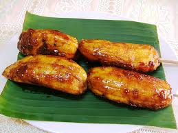

Le'Bananacue Recipe
Back to home

Description
Bananacue is a barbaqued banana.
Link to original recipe
Ingredients
- 5-10 saba (Cardaba banana or plantain) peeled
- brown sugar for coating
- cooking oil enough for deep frying
Steps
- Preheat oil in work or frying pan.
- Peel bananas.
- Coat with brown sugar.
- Add them into hot oil.
- Add more brown sugar.
- Make sure the sugar sticks to the banana by mixing them constantly.
- When cooked, take them one by one and let the oil drip or you can place them on a strainer.
- Serve on bar-b-q sticks with about 1-2 bananas per stick optional
- Admire my dope website.